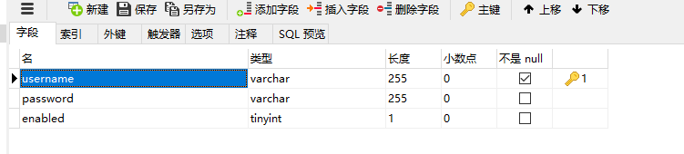
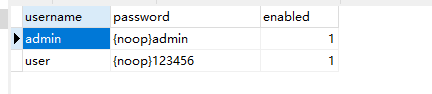
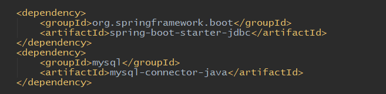
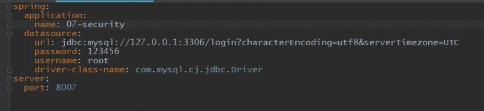
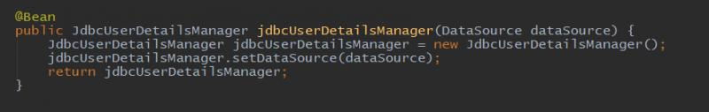
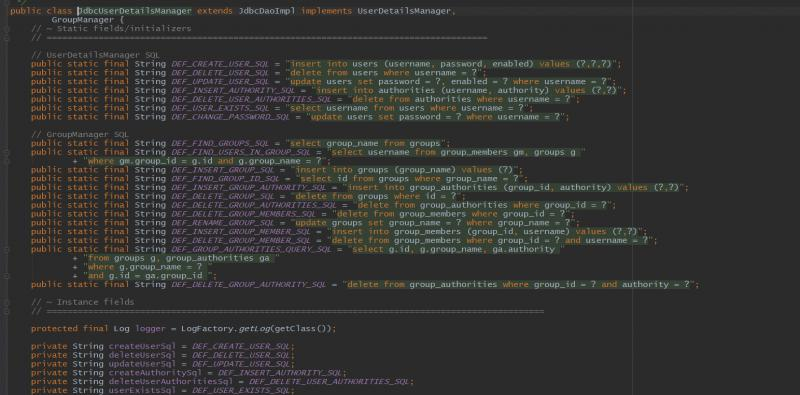
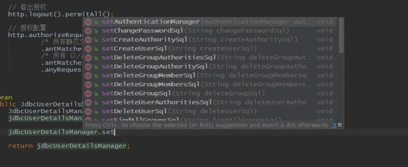

前面我们定义用户是在配置文件和代码中定义死的默认用户，一般在开发中是不会这样做的，我们的用户都是来自我们的用户表，存储在数据库中。操作数据库的技术有很多，spring security默认支持了一个JDBC的方式，下面用这个方式来从数据库中查询用户。首先定义用户表users：

enabled字段表示是否启用，改为0表示不允许此用户登录。在表里面添加两个用户 ：

注意密码前面都加了{noop}是JDBC这种查询方式默认的加密算法。实际上，这种方式还需要定义好几个表，此处我们演示定义一个users用户表就足够了。
因为加入了数据库，所以我们要添加两个依赖：

数据源按照springboot的方式配置即可：

删除原来在配置类中定义的内存用户，在配置类中增加一个Bean：

这样使用jdbc从数据库中查询用户就完全配置好了，启动可以使用 admin/admin和user/123456两个用户登录。
这种jdbc的方式配置是很简单的，但是有很多定义死的内容，比如表明和表中的三个字段，不过这些也是可以进行修改的。
上面的配置类中，使用了JdbcUserDetailsManager类，我们来进入这个类，看一下内容：

可以看到里面有很多默认的sql语句，这也解释了为什么用户表要叫user，为什么是上面定义的三个字段，增删改查用户都执行了哪些语句。而且默认的语句中不仅有users用户表，还有 groups表，authorities权限表，等等一些其它的表，从这些结构中就能看出把整个权限系统的架构规划了出来。我们要修改默认的语句可以调用对应的set方法：

但是尽管所有的都可以配置，对于实际业务来说还是太死板了，尤其对于稍微大型的项目，对权限系统的个性化设计占很大成分，因此这种jdbc的方式适应性不是很大。后面会介绍更加实用的mybatis方式。